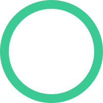

Foco: energia média
Sugerido pelo check-in e pelo planejamento do dia.

25:00 Foco leveEscolher sessão ideal
Tarefa recomendada
Revisar relatório com calma
Média prioridade · esforço médio · 1 sessão
Sugerido pelo check-in e pelo planejamento do dia.

25:00 Foco leveMédia prioridade · esforço médio · 1 sessão